Chapter 4: Security Operations — Detect, Respond & Recover¶
This is the security control room: the tools and services that watch for attacks, hunt for hidden intruders, investigate what happened and get the organisation back on its feet. They collect activity records, spot suspicious behaviour, automate routine work, test defences, and train and rehearse people for a crisis. Together they turn a flood of raw data into fast, confident decisions.
4.1 SIEM — Security Information & Event Management¶
A SIEM collects records of activity (called logs) from computers, networks and cloud apps into one place, then looks for patterns that suggest an attack. When something suspicious shows up, it raises an alert so a human analyst can check it.
Think of it like…
It is like the CCTV control room of a shopping centre: hundreds of cameras feed into one wall of screens, and the guard is alerted when someone tries doors after closing time.
Real-world example
At Riverside Clinic, the SIEM notices 300 failed logins on a nurse's account within ten minutes, followed by one success from a foreign country. It links the two events and raises a high-priority alert. The on-call analyst sees the full timeline on one screen, locks the account and forces a password reset before any patient records are opened.
How it works¶
- Connect log sources: servers, laptops, firewalls, email, cloud and identity systems.
- The SIEM tidies the logs into a common format and stores them for searching.
- Detection rules and analytics look for suspicious patterns in real time.
- Alerts go to analysts, who investigate using searches and timelines.
- Reports prove to auditors that monitoring is in place and logs are kept.
Who uses it
Security operations centre (SOC) analysts, threat hunters and compliance teams in banks, hospitals, governments and any mid-to-large organisation.
Key takeaway
A SIEM is only as good as the logs you feed it and the rules you tune — start with identity, email and internet-facing systems.
Going deeper
- SIEM pricing is usually based on data ingested per day (GB/day) or events per second (EPS), so controlling log volume is a constant cost concern.
- Each platform has its own query language: SPL in Splunk, KQL in Microsoft Sentinel, YARA-L in Google SecOps, EQL and ES|QL in Elastic, and AQL in QRadar.
- Correlation rules link events across sources and time, for example many failed logons (4625) followed by a success (4624) from the same IP within ten minutes.
- Detection-as-code keeps rules in Git, tests them in CI pipelines and maps each to MITRE ATT&CK, bringing software engineering discipline to the SOC.
- PCI DSS requires keeping audit logs for at least twelve months with three months immediately available; many other regulations set similar or longer retention periods.
- Many SIEMs now separate cheap data-lake storage from detection and bundle SOAR, UEBA and AI assistants that summarise incidents and draft queries.
Common mistakes & misconceptions
- Ingesting every log on day one without use cases; start with identity, endpoint, email and internet-facing systems, then expand.
- Leaving default rules untuned causes alert fatigue; tune, suppress and measure each rule's true-positive rate.
- Not noticing silent sources; if a firewall stops sending logs, attacks there become invisible, so alert on missing data.
Try it: Splunk search: IP addresses with many failed Windows logins¶
index=wineventlog EventCode=4625
| stats count by src_ip
| where count > 20
| sort - count
Popular tools & products¶
| Name | What it does | Example |
|---|---|---|
| Splunk Enterprise Security Splunk (Cisco) · Commercial |
Long-established SIEM built on Splunk's search language, with risk scoring, ready-made detections and, in newer editions, built-in automation and behaviour analytics. | A bank searches a year of logs in seconds to find every login by a contractor whose laptop was stolen. |
| Microsoft Sentinel Microsoft · Cloud service |
Cloud-native SIEM, now run from the Microsoft Defender portal, connecting easily to Microsoft 365, Entra ID, Defender and many third-party sources. | A school district already using Microsoft 365 switches on Sentinel and gets alerts for risky sign-ins within a day. |
| Google Security Operations Google Cloud · Cloud service |
Cloud SIEM (formerly Chronicle) that stores huge volumes of security data and searches it very fast, with Google threat intelligence built in. | A retailer keeps twelve months of network logs and checks instantly whether a newly reported malicious domain was ever contacted. |
| IBM QRadar SIEM IBM · Commercial |
Widely deployed on-premises SIEM that groups related alerts into 'offenses'; IBM sold the cloud (SaaS) version to Palo Alto Networks in 2024. | A utility's QRadar links a phishing click, a new admin account and a large upload into one offense. |
| Elastic Security Elastic · Freemium |
SIEM built on Elasticsearch with prebuilt detection rules, timelines and case management; free core features, paid machine learning and advanced analytics. | A university uses Elastic's prebuilt rules to spot PowerShell commands commonly used by attackers on lab PCs. |
| Exabeam Exabeam (merged with LogRhythm, 2024) · Commercial |
SIEM known for user and entity behaviour analytics (UEBA): it learns what is normal for each person and flags unusual activity. | An insurer is alerted when an employee suddenly downloads thousands of customer files at 3 a.m. |
| LogRhythm SIEM Exabeam (LogRhythm) · Commercial |
Mid-market SIEM with built-in compliance reports and guided case management, popular with smaller security teams. | A regional credit union uses LogRhythm's PCI DSS reports to show auditors that card systems are monitored. |
| Sumo Logic Sumo Logic · Cloud service |
Cloud log analytics and SIEM platform, popular with companies running applications in AWS and other clouds. | A software start-up spots stolen cloud keys being used from an unfamiliar country. |
| OpenText ArcSight OpenText (formerly Micro Focus) · Commercial |
One of the oldest enterprise SIEMs, still common in large government and telecom organisations. | A national telecom feeds billions of network events per day into ArcSight for its 24/7 SOC. |
| Securonix Securonix · Cloud service |
Cloud SIEM with strong user and entity behaviour analytics for spotting insider threats and compromised accounts. | A pharmaceutical firm detects a departing scientist copying research files to personal cloud storage. |
| Cortex XSIAM Palo Alto Networks · Cloud service |
AI-driven security operations platform combining SIEM, automation, endpoint data and attack surface management; Palo Alto's replacement for QRadar's cloud edition. | A telecom replaces separate SIEM and SOAR tools with XSIAM, which groups thousands of daily alerts into a few dozen incidents. |
| Rapid7 InsightIDR Rapid7 · Cloud service |
Cloud SIEM popular with mid-sized teams, with built-in user behaviour analytics and decoy 'honeypot' traps; Rapid7's newer Incident Command extends it. | A college is alerted when a staff account logs in from two countries an hour apart, an impossible journey. |
| FortiSIEM Fortinet · Commercial |
SIEM that combines security events with device and network health monitoring; common with Fortinet customers and managed service providers. | A managed service provider watches 40 small clients' firewalls and servers from one FortiSIEM console. |
| CrowdStrike Falcon Next-Gen SIEM CrowdStrike · Cloud service |
SIEM built on CrowdStrike's Falcon platform that combines endpoint data with logs from third-party tools. | A manufacturer already using Falcon on laptops adds firewall logs to see attacks from both sides. |
| Wazuh Wazuh · Open source |
Free open-source SIEM and XDR server that correlates agent, syslog and cloud logs, with ready-made PCI DSS, HIPAA and GDPR compliance dashboards. | A small charity's Wazuh server collects logs from its web host, firewall and Microsoft 365 and alerts on suspicious sign-ins. |
4.2 Log Management & Telemetry Pipelines¶
Every device and app writes a diary of what it did — these entries are called logs, and all such data together is called telemetry. Log management tools collect, move, filter and store this data so it can be searched later; pipeline tools sit in the middle, cleaning and routing data to the right place.
Think of it like…
It is like a postal sorting office: letters (logs) arrive from everywhere, get sorted, junk mail is thrown away, and each letter goes to the right building.
Real-world example
Harbour Logistics was paying a fortune to store noisy debug logs in its SIEM. The team placed a pipeline tool in front of it that drops useless entries, removes customer phone numbers, and sends a full copy to cheap cloud storage. SIEM costs fall by 40%, while all raw logs are still kept for a year in case an investigation needs them.
How it works¶
- Small agents on servers and devices collect logs and send them onward.
- A pipeline parses, filters, masks private data and adds useful labels.
- Data is routed to destinations: SIEM for alerts, cheap storage for archives.
- Analysts search the stored logs during investigations and troubleshooting.
- Retention rules keep logs as long as laws and policies require.
Who uses it
IT operations, site reliability engineers, security engineers and compliance teams in any organisation with more than a handful of systems.
Key takeaway
Make sure every important system's clock is synced and its logs are kept somewhere attackers cannot delete them.
Going deeper
- Syslog (RFC 5424) is the classic transport, traditionally on UDP or TCP port 514, with TLS on port 6514 for encrypted, reliable delivery.
- Structured formats such as JSON, CEF and LEEF make parsing reliable, while schemas such as OCSF and Elastic Common Schema standardise field names across vendors.
- Hot, warm, cold and archive tiers trade search speed for cost; keep recent data instantly searchable and older data in object storage that can be rehydrated.
- Log integrity matters: write-once (WORM) storage, hashing or a separate locked-down account for archives stops attackers erasing their tracks.
- OpenTelemetry's OTLP protocol is becoming the common way to ship logs, metrics and traces, supported by most observability tools and a growing number of security tools.
Common mistakes & misconceptions
- Dropping fields to save money that later prove essential in an investigation; keep a full raw copy in cheap storage.
- Logging passwords, tokens or card numbers; mask sensitive values in the pipeline before anything is stored.
- Mixed time zones and unsynchronised clocks scramble timelines; use NTP everywhere and store timestamps in UTC.
Try it: Fluent Bit config skeleton: read a log file and print it¶
[INPUT]
Name tail
Path /var/log/auth.log
Tag auth
[OUTPUT]
Name stdout
Match auth
Popular tools & products¶
| Name | What it does | Example |
|---|---|---|
| Elastic Stack (ELK) Elastic · Freemium |
Elasticsearch, Logstash, Kibana and Beats: a hugely popular stack for collecting, storing, searching and visualising logs. | A web shop ships web-server logs into Elasticsearch and builds a Kibana dashboard of errors and suspicious requests. |
| Graylog Graylog · Freemium |
Log management platform with a free open edition, easy search and alerting; often chosen by smaller teams. | A city council collects firewall and server logs in Graylog and alerts on repeated VPN login failures. |
| Splunk Enterprise / Splunk Cloud Platform Splunk (Cisco) · Commercial |
General-purpose platform for indexing and searching any machine data, used for IT operations as well as security. | An airline uses Splunk to trace why check-in kiosks failed, then reuses the same data for security. |
| Cribl Stream Cribl · Freemium |
Telemetry pipeline that filters, reshapes and routes data between sources and tools, often cutting storage costs sharply. | A bank strips repetitive fields from firewall logs before they reach the SIEM, halving data volume. |
| Datadog Log Management Datadog · Cloud service |
Cloud monitoring service whose log product also feeds Datadog's Cloud SIEM for security detection. | A SaaS company correlates an error spike with a burst of login attempts in one Datadog view. |
| Fluentd / Fluent Bit CNCF (Cloud Native Computing Foundation) · Open source |
Lightweight open-source log collectors and forwarders, especially common in containers and Kubernetes clusters. | A streaming service runs Fluent Bit on every Kubernetes node to forward container logs to OpenSearch. |
| OpenSearch OpenSearch Software Foundation (Linux Foundation) · Open source |
Open-source search and analytics suite forked from Elasticsearch, with dashboards and a security analytics plugin. | A government agency stores audit logs in a self-hosted OpenSearch cluster to keep data in-country. |
| Grafana Loki Grafana Labs · Open source |
Cost-efficient log storage that indexes only labels, not full text; pairs with Grafana dashboards. | A gaming company keeps months of application logs cheaply in Loki and views them beside performance charts. |
| Vector Datadog · Open source |
High-performance open-source tool for collecting, transforming and routing logs and metrics. | A fintech uses Vector to mask card numbers in logs before they leave its servers. |
| OpenTelemetry Collector CNCF · Open source |
Vendor-neutral standard and collector for logs, metrics and traces, so data is not locked into one product. | An online retailer instruments apps once with OpenTelemetry and can switch monitoring vendors without code changes. |
| rsyslog / syslog-ng rsyslog project / One Identity (syslog-ng) · Open source |
Classic Linux tools that receive and forward syslog messages from servers and network devices. | A hospital's network switches send syslog to a central rsyslog server that forwards everything to the SIEM. |
| NXLog NXLog · Freemium |
Log collection agent, popular on Windows, that gathers and forwards event logs; free Community Edition plus a commercial platform. | A council installs NXLog on 300 Windows servers to send security events to its Graylog server in one standard format. |
| OCSF (Open Cybersecurity Schema Framework) OCSF project (Linux Foundation) · Framework |
Open standard format for security events, so logs from different vendors look alike and tools can share them easily. | A retailer keeps logs in Amazon Security Lake in OCSF format and searches firewall and cloud events together with one query. |
4.3 User Behaviour Analytics (UEBA) & Insider Risk¶
UEBA stands for User and Entity Behaviour Analytics. It learns what 'normal' looks like for each person, computer and account — when they log in, what they open, how much they download — and flags behaviour that suddenly changes. Insider risk tools use the same idea to spot staff, contractors or stolen accounts misusing data.
Think of it like…
It is like a bank teller who knows a regular customer: if that customer suddenly withdraws their life savings in cash at closing time, the teller notices and asks a question.
Real-world example
At Brightwater Pharma, the UEBA system knows a research scientist normally opens about 40 files a day from the office. One Friday night her account opens 3,000 files and copies them to a personal cloud drive from a new device. Her risk score jumps and the insider risk team learns she has resigned to join a competitor. HR and legal step in before the files are shared.
How it works¶
- Feed in activity from identity, email, file, endpoint and cloud systems.
- The tool builds a 'baseline' of normal behaviour for each user, device and peer group.
- Unusual actions add points to a risk score instead of each raising its own alert.
- When a score crosses a threshold, analysts review that user's full activity timeline.
- Security, HR, legal and privacy teams agree the response, following a written policy.
Who uses it
SOC analysts, insider risk teams, HR and legal investigators in finance, pharmaceuticals, technology, defence and government.
Key takeaway
Tell staff that monitoring exists, involve legal and privacy teams early, and keep investigations fair — the goal is protecting data, not spying on people.
Going deeper
- Baselines are built per user, per entity such as a host or service account, and per peer group, usually needing several weeks of history before scores become dependable.
- Typical anomalies include impossible travel, first-time access to a resource, unusual hours, abnormal data volumes, rare processes and new privileged actions.
- Risk-based alerting adds small scores for each anomaly and alerts only when an entity's total crosses a threshold, cutting alert volume compared with one alert per event.
- Insider risk programmes commonly follow the CERT Common Sense Guide to Mitigating Insider Threats, combining HR, legal, IT and security under clear governance.
- In the EU, monitoring staff needs a GDPR lawful basis and proportionality, and often a data protection impact assessment and works-council consultation before deployment.
Common mistakes & misconceptions
- Expecting value on day one; models need weeks of clean history and accurate identity data before scores mean much.
- Treating a high score as proof of guilt; it is only a lead, and role changes or travel often cause false positives.
- Monitoring covertly without legal review risks lawsuits and destroys trust; publish an acceptable-use and monitoring policy.
Try it: Microsoft Sentinel (KQL): users whose recent behaviour UEBA rates as most unusual¶
BehaviorAnalytics
| where TimeGenerated > ago(7d)
| where InvestigationPriority >= 5
| project TimeGenerated, UserPrincipalName, ActivityType, ActionType, InvestigationPriority
| sort by InvestigationPriority desc
Popular tools & products¶
| Name | What it does | Example |
|---|---|---|
| Microsoft Sentinel UEBA Microsoft · Cloud service |
Built-in behaviour analytics in Microsoft Sentinel that profiles users and devices and scores each unusual activity from 0 to 10. | An analyst sees one account's first-ever sign-in from abroad, followed by unusual mailbox access, ranked top of the investigation list. |
| Splunk Enterprise Security UEBA Splunk (Cisco) · Commercial |
Behaviour analytics built into Splunk Enterprise Security, replacing the standalone Splunk UBA product, whose support ends in January 2027. | A bank's SOC sees a privileged admin's risk score climb after unusual late-night server logins and a newly installed remote-access tool. |
| Exabeam UEBA Exabeam · Commercial |
Pioneering UEBA product that stitches each user's activity into automatic timelines and highlights risky changes in behaviour. | An investigator sees a contractor's whole week as one timeline: VPN login, unusual database queries, then a large upload. |
| Securonix UEBA Securonix · Cloud service |
Long-established behaviour analytics that uses machine learning to spot insider threats, compromised accounts and data theft. | A hospital spots a staff member viewing hundreds of celebrity patient records they have no work reason to open. |
| Microsoft Purview Insider Risk Management Microsoft · Cloud service |
Spots risky data handling by staff across Microsoft 365, such as mass downloads before leaving, with user names hidden by default. | A law firm is alerted when a departing associate emails client files to a personal address during their final week. |
| DTEX InTERCEPT DTEX Systems · Commercial |
Insider risk platform that collects lightweight activity data from computers and scores risky behaviour while masking personal details. | A defence contractor notices an engineer searching how to bypass USB blocking shortly before trying to copy design files. |
| Proofpoint Insider Threat Management Proofpoint · Commercial |
Endpoint-based insider threat tool (formerly ObserveIT) that records risky actions, with screenshots, as evidence for investigations. | An investigator replays exactly how a contractor exported a customer list and copied it to a USB stick. |
| Gurucul Gurucul · Commercial |
Security analytics vendor offering UEBA, insider risk and SIEM, using machine-learning models to score user and access risk. | A telecom finds dormant accounts that can still reach billing systems — and one contractor quietly using them. |
| Teramind Teramind · Commercial |
Employee activity monitoring and insider threat tool that records application use and can block risky actions like unauthorised uploads. | A call centre stops agents pasting customer card details into personal webmail and alerts the compliance team. |
4.4 SOAR & Security Automation¶
SOAR stands for Security Orchestration, Automation and Response. These tools run 'playbooks' — step-by-step recipes that automatically do repetitive security chores, such as checking a suspicious link or blocking a bad address, so humans can focus on hard decisions.

Think of it like…
It is like a kitchen with recipe cards and helpers: when an order comes in, helpers chop, weigh and pre-heat automatically, and the chef only steps in for the tricky part.
Real-world example
Maple Insurance's staff report around 200 suspicious emails a day. A SOAR playbook pulls out each email's links and attachments, checks them against threat intelligence, and deletes confirmed phishing from every inbox. Only the unclear cases reach an analyst, cutting a day of manual work to about an hour.
How it works¶
- An alert or reported email triggers a playbook.
- The playbook gathers context: looks up IPs, files and users in other tools.
- Simple, clear-cut cases are handled automatically (block, quarantine, reset).
- Uncertain cases go to an analyst with all the evidence attached.
- Every action is logged, giving a complete record for reports and audits.
Who uses it
SOC teams, managed security providers and IT teams that want to handle more alerts without hiring more people.
Key takeaway
Automate the boring, low-risk steps first, and keep a human approval step before anything disruptive like isolating a server.
Going deeper
- Common playbooks cover phishing triage, malware alert enrichment, compromised accounts (disable user, revoke sessions, reset MFA), indicator blocking and vulnerability ticket creation.
- Integrations call vendor APIs, so a SOAR platform's practical value depends heavily on maintained connectors for the exact tools you already own.
- Useful metrics include alerts closed automatically, analyst hours saved, mean time to respond and the share of incidents handled end-to-end by a playbook.
- Many SIEM and XDR platforms now include built-in automation, while general no-code tools such as Tines and Torq serve both security and IT workflows.
- AI assistants increasingly summarise cases and suggest next steps, but high-impact actions should still need human approval and leave an audit trail.
Common mistakes & misconceptions
- Automating a broken manual process only makes mistakes faster; document and fix the workflow before automating it.
- Fully automating disruptive actions such as isolating servers without guardrails can cause outages; use allowlists and approval steps.
- Playbooks silently break when APIs change; monitor playbook failures and give each playbook a named owner.
Try it: Simplified phishing playbook logic (pseudo-YAML)¶
trigger: email_reported
steps:
- extract: [urls, attachments]
- lookup: threat_intel
- if: verdict == malicious
then: [delete_from_all_inboxes, notify_reporter]
else: assign_to_analyst
Popular tools & products¶
| Name | What it does | Example |
|---|---|---|
| Cortex XSOAR Palo Alto Networks · Commercial |
Mature SOAR platform with hundreds of integrations, case management and a marketplace of ready-made playbooks. | A bank automatically enriches every malware alert with sandbox results and the user's manager before an analyst opens it. |
| Splunk SOAR Splunk (Cisco) · Commercial |
SOAR platform (formerly Phantom) that runs visual playbooks and works closely with Splunk Enterprise Security. | A retailer's playbook blocks a malicious IP on all firewalls within a minute of a Splunk alert. |
| Tines Tines · Freemium |
No-code automation platform where teams build workflows from simple drag-and-drop steps; a free community edition is available. | A two-person security team automates suspicious-login checks by messaging the user in Slack to confirm. |
| Swimlane Turbine Swimlane · Commercial |
Low-code security automation platform aimed at large SOCs and managed service providers. | An MSSP uses Swimlane to triage alerts from dozens of clients in one consistent process. |
| Torq Torq · Cloud service |
Cloud-based no-code security automation ('hyperautomation') with AI-assisted case handling. | A tech company auto-resets passwords and revokes sessions whenever a user's credentials appear in a breach. |
| Microsoft Sentinel playbooks (Logic Apps) Microsoft · Cloud service |
Automation in Microsoft Sentinel built on Azure Logic Apps, triggered by alerts or incidents. | A school's playbook disables a compromised account in Entra ID and posts a note in Microsoft Teams. |
| Google SecOps SOAR Google Cloud · Cloud service |
SOAR capability (formerly Siemplify) built into Google Security Operations, grouping related alerts into cases. | A logistics firm merges 50 related alerts into one case with automated enrichment. |
| FortiSOAR Fortinet · Commercial |
SOAR platform that integrates tightly with Fortinet firewalls and other security products. | A hospital automatically quarantines an infected device at the network switch when malware is detected. |
| IBM QRadar SOAR IBM · Commercial |
SOAR and incident response platform (formerly IBM Resilient) with dynamic playbooks and built-in guidance on data-breach notification laws. | After a laptop holding customer data is stolen, the platform lists which countries' breach-reporting deadlines apply and assigns tasks. |
| Shuffle Shuffle · Open source |
Open-source SOAR with a visual workflow editor and many community-built app integrations. | A university security club automates IP reputation checks for Wazuh alerts at no licence cost. |
| Rapid7 InsightConnect Rapid7 · Commercial |
Low-code SOAR built into Rapid7's platform, with hundreds of plugins and workflows that can pause for analyst approval in chat. | When InsightIDR flags a compromised account, a workflow asks the analyst in Slack before disabling it in Active Directory. |
| D3 Smart SOAR D3 Security · Commercial |
Vendor-neutral SOAR platform with many integrations and event pipelines that de-duplicate and triage alerts before analysts see them. | An MSSP routes alerts from 30 clients' different SIEMs through D3 so each follows the same triage playbook. |
4.5 Incident Management, Crisis Communication & Exercises¶
When an attack happens, many people must work together fast — security, IT, lawyers, managers and communications staff. Incident management tools track every task and decision in one 'case', wake the right people at any hour and help leaders keep everyone informed. Exercises (practice drills, often called tabletop exercises) let teams rehearse a crisis before a real one happens.
Think of it like…
It is like a hospital emergency department: a whiteboard tracks every patient and task, pagers call the right specialists, and regular drills mean everyone knows their role when the ambulances arrive.
Real-world example
At 6 a.m. Harbourview Hotels' SOC confirms ransomware on a booking server. PagerDuty wakes the on-call responder, who opens a case in ServiceNow and assigns time-stamped tasks to IT, legal and PR. Because the team rehearsed this exact scenario in a spring tabletop exercise, the CEO, lawyers and press team already know who decides on regulator notifications and customer messages. The final case record becomes the post-incident report.
How it works¶
- Write an incident response plan with clear roles, contacts and decision rights.
- Alerts page the on-call person, who opens a case to record every action.
- Tasks go to security, IT, legal, HR and communications, each with an owner and deadline.
- Leaders share updates through agreed backup channels in case email is compromised.
- After closure, hold a lessons-learned review and rehearse again with a new scenario.
Who uses it
Incident response managers, CISOs, IT service teams, legal counsel, communications teams and executives in organisations of every size.
Key takeaway
Keep the plan and contact list somewhere you can reach even if email and the network are down, and rehearse it at least once a year with senior leaders.
Going deeper
- NIST SP 800-61 Rev. 3 (April 2025) replaced the old four-phase lifecycle with guidance mapped to the CSF 2.0 functions Govern, Identify, Protect, Detect, Respond and Recover.
- Regulatory clocks drive decisions: GDPR expects regulator notification within 72 hours, NIS2 an early warning within 24 hours, and US-listed firms file Form 8-K within four business days of a material incident.
- Severity levels, for example SEV1 to SEV4, define who is woken, how quickly leaders are briefed and when lawyers, insurers or police are contacted.
- Out-of-band communication, such as a separate chat platform, personal phones and printed contact lists, is vital when email or Teams may be compromised.
- Tabletop exercises take one to four hours around a scenario with timed 'injects'; functional and full-scale exercises add real systems and teams.
- Cyber insurers often require panel-approved response firms, so check the policy before an incident to ensure a retainer's costs will be covered.
Common mistakes & misconceptions
- Keeping the only copy of the plan on a network share that ransomware encrypts; keep offline and printed copies.
- Wiping and rebuilding immediately destroys the evidence needed to find the root cause; preserve images and logs first.
- Running exercises with only IT staff; include executives, legal, communications and HR, who make the hardest decisions.
Try it: Minimal incident record template (YAML)¶
incident_id: IR-2026-014
title: Ransomware on booking server
severity: high
status: contained
owner: on-call responder
timeline:
- "06:02 alert confirmed by SOC"
- "06:15 server isolated from network"
next_actions:
- legal: check regulator notification deadline
- comms: draft customer statement
Popular tools & products¶
| Name | What it does | Example |
|---|---|---|
| ServiceNow Security Incident Response ServiceNow · Cloud service |
Part of ServiceNow Security Operations: tracks security incidents from detection to closure and links tasks to the IT teams that must act. | A bank's analyst turns a SIEM alert into a case; patching and password-reset tasks flow automatically to the right IT teams. |
| Jira Service Management Atlassian · Freemium |
Service desk used to log, assign and track incidents; it now includes the on-call alerting of Atlassian's retiring Opsgenie. | A software company tracks each security incident as a Jira ticket linked to the developer tasks that fix the root cause. |
| TheHive StrangeBee · Freemium |
Incident response case management platform for collaborating on investigations; often paired with Cortex analyzers and MISP. | A CERT team tracks each incident's tasks, evidence and notes in TheHive while three analysts work together. |
| PagerDuty PagerDuty · Freemium |
On-call scheduling and alerting platform that pages the right responder by app, phone call or text and coordinates the response. | A critical SIEM alert at 2 a.m. rings the on-call analyst's phone and escalates to her manager if nobody responds within ten minutes. |
| Everbridge (incl. xMatters) Everbridge · Commercial |
Critical event management platform for mass notification, crisis communication and IT alerting when normal channels are disrupted. | A university texts all staff and students when a cyberattack takes email offline, then sends updates every two hours. |
| Incident response retainers (Mandiant, Unit 42, CrowdStrike, Kroll) Specialist response firms · Commercial |
Pre-agreed contracts that put expert incident responders on call, so help arrives within hours of a serious breach. | When ransomware strikes, a manufacturer rings its retainer hotline and forensic experts join the call within an hour, already under contract. |
| CISA Tabletop Exercise Packages (CTEPs) CISA · Free |
Over 100 free, ready-made exercise kits with scenarios, discussion questions and templates, including ransomware and insider threats. | A county water utility runs CISA's ransomware package in a two-hour meeting with managers and its IT supplier. |
| NCSC Exercise in a Box UK National Cyber Security Centre · Free |
Free online toolkit that guides organisations through realistic cyber exercises without needing outside experts. | A UK charity runs a ransomware exercise with its trustees and discovers nobody knows who should call the bank. |
| Backdoors & Breaches Black Hills Information Security · Freemium |
Card game for quick tabletop exercises: one player secretly picks an attack and the team must uncover it using their procedures. | A SOC team plays a 45-minute round each month to practise which logs they would check first. |
| Immersive Crisis Sim Immersive (formerly Immersive Labs) · Commercial |
Interactive digital crisis simulations that test leaders' decisions under pressure and score how well the team responded. | A retailer's board works through a simulated data breach, deciding when to notify regulators and what to tell customers. |
| incident.io incident.io · Cloud service |
Incident management and on-call platform run largely from Slack or Teams, creating channels, roles, status updates and post-incident reports. | When a breach is declared, incident.io opens a private channel, pages the responders and drafts the timeline for the review. |
| DFIR-IRIS DFIR-IRIS project · Open source |
Free collaborative platform for incident responders to track cases, evidence, indicators, timelines and tasks, with reports generated from templates. | A university CSIRT logs every artefact and timeline entry in DFIR-IRIS and exports a finished report for management. |
4.6 Threat Intelligence Platforms & Feeds¶
Threat intelligence is shared knowledge about attackers: which internet addresses, websites and files are malicious, and how criminal groups operate. Feeds deliver lists of these clues (called indicators), and platforms collect, score and share them so defenders can block threats early.
Think of it like…
It is like a neighbourhood watch noticeboard: neighbours post descriptions of a burglar's van and tricks, so everyone knows what to look out for.
Real-world example
Northwind Energy's analyst sees a server talking to an unfamiliar IP address. She checks it in the company's threat intelligence platform and finds it linked to a ransomware group targeting energy firms. The firewall blocks it immediately, and the team hunts for any other machines that contacted it in the past month.
How it works¶
- Collect indicators and reports from commercial, government and community sources.
- Remove duplicates and score each indicator for how trustworthy and recent it is.
- Push high-confidence indicators to firewalls, SIEM and email filters automatically.
- Analysts use reports about attacker behaviour to plan defences.
- Share your own findings back with trusted partners and industry groups.
Who uses it
Threat intelligence analysts, SOC teams, incident responders and industry sharing groups (such as ISACs) in finance, energy, healthcare and government.
Key takeaway
Indicators like IP addresses go stale fast; focus on intelligence relevant to your industry and on attacker behaviours, which change slowly.
Going deeper
- Intelligence works at three levels: strategic (trends and risk for executives), operational (campaigns and actors) and tactical (indicators and TTPs for SOC tools).
- The Traffic Light Protocol 2.0 labels TLP:RED, TLP:AMBER+STRICT, TLP:AMBER, TLP:GREEN and TLP:CLEAR tell recipients how widely they may share information.
- STIX 2.1 describes objects such as indicators, malware, threat actors and their relationships; TAXII 2.1 is the HTTPS API that moves them between platforms.
- The Admiralty Code rates source reliability from A to F and information credibility from 1 to 6, helping analysts weigh conflicting reports.
- Indicators age quickly: cloud IP addresses and domains are reused, so expire old indicators automatically to avoid blocking legitimate services.
Common mistakes & misconceptions
- Buying many feeds without defined intelligence requirements; decide which questions intelligence must answer before choosing sources.
- Auto-blocking low-confidence indicators can block shared hosting or CDNs; set confidence thresholds and maintain allowlists.
- Consuming but never sharing; communities only work when members contribute back under appropriate TLP markings.
Try it: Ask GreyNoise's free community API whether an IP is a known scanner¶
curl -s https://api.greynoise.io/v3/community/8.8.8.8
Popular tools & products¶
| Name | What it does | Example |
|---|---|---|
| Recorded Future Recorded Future (Mastercard) · Commercial |
Large intelligence platform that scans the open, deep and dark web and scores threats to your organisation. | A bank is alerted when its customers' card numbers are offered for sale on a criminal forum. |
| Google Threat Intelligence Google Cloud (incl. Mandiant) · Commercial |
Combines Mandiant's frontline research, VirusTotal data and Google's visibility into one intelligence service. | A ministry reads Mandiant reports on a state-backed group and checks its own logs for that group's tools. |
| CrowdStrike Falcon Adversary Intelligence CrowdStrike · Commercial |
Intelligence on named attacker groups (formerly Falcon Intelligence), built into the Falcon platform, with automated malware analysis and dark web monitoring. | An analyst learns an alert matches a known e-crime group and follows CrowdStrike's advice on their next steps. |
| MISP MISP Project (CIRCL) · Open source |
Free platform for storing and sharing indicators and threat events among trusted communities. | European CERTs share phishing domains through MISP so each member can block them within hours. |
| OpenCTI Filigran · Open source |
Open-source platform that organises threat knowledge as linked entities, using the STIX standard and MITRE ATT&CK. | A telecom maps which attacker groups target its sector and which techniques they use. |
| AlienVault OTX LevelBlue (formerly AT&T Cybersecurity) · Free |
Open Threat Exchange: a free community where researchers publish 'pulses' of indicators about current threats. | A small IT firm subscribes to OTX pulses and imports them into its open-source SIEM. |
| GreyNoise GreyNoise Intelligence · Freemium |
Identifies IP addresses that mass-scan the whole internet, so analysts can ignore background noise and focus on targeted attacks. | An analyst learns an alerting IP is a harmless research scanner and closes the alert in seconds. |
| AbuseIPDB AbuseIPDB · Freemium |
Community database where people report abusive IP addresses, such as those brute-forcing logins or sending spam. | A web admin checks an IP hammering the login page and sees hundreds of prior abuse reports. |
| abuse.ch (URLhaus, MalwareBazaar, ThreatFox) abuse.ch · Free |
Non-profit project offering free feeds of malware download URLs, malware samples and indicators. | A university blocks all URLhaus-listed malware links at its web proxy every hour. |
| Anomali ThreatStream Anomali · Commercial |
Threat intelligence platform that gathers many feeds, scores indicators and pushes them to security tools. | A retailer combines ten feeds in ThreatStream and sends only high-confidence ones to its firewalls. |
| ThreatConnect ThreatConnect (Dataminr) · Commercial |
Intelligence platform that links threat data to business risk and supports team analysis workflows. | An insurer prioritises threats by how much financial damage they could cause. |
| ThreatQ Securonix (ThreatQuotient) · Commercial |
Threat intelligence platform that scores and organises indicators from many feeds and shares them with security tools and teams. | An energy company's analysts merge government and commercial feeds in ThreatQ and push only relevant indicators to their firewalls. |
| CISA Automated Indicator Sharing (AIS) CISA · Free |
Free US government service exchanging machine-readable threat indicators in STIX/TAXII format between government and private organisations. | A regional bank's threat platform pulls AIS indicators automatically and shares phishing domains it discovers back to the community. |
| ISACs (e.g. FS-ISAC, Health-ISAC) Sector member organisations · Commercial |
Membership-based Information Sharing and Analysis Centers where organisations in one industry share alerts, indicators and lessons under trusted rules. | A hospital learns through Health-ISAC that a ransomware group is targeting its remote-access product and patches the same day. |
4.7 Threat Hunting¶
Threat hunting means actively searching for attackers who have slipped past your defences, instead of waiting for an alert. Hunters start with an idea (a 'hypothesis'), such as 'an attacker may be using stolen passwords at night', then search logs and devices to prove or disprove it.
Think of it like…
It is like a security guard who, instead of waiting for the alarm, walks the building checking for propped-open doors and footprints in the dust.
Real-world example
After reading a report about criminals hiding commands inside encoded PowerShell, a hunter at Westbrook Bank searches a month of endpoint data for that pattern. She finds one finance PC running such a command every night at 2 a.m. — a backdoor no alert had caught. The PC is isolated, the attacker's access removed, and her search becomes a permanent detection rule.
How it works¶
- Form a hypothesis from threat intelligence, MITRE ATT&CK techniques or something odd you noticed.
- Pick the data you need: endpoint, identity, network or cloud logs.
- Search for rare or unusual activity rather than only known-bad clues.
- Hand anything malicious to incident response.
- Turn successful hunts into automated detections so the same trick is caught next time.
Who uses it
Experienced SOC analysts, dedicated threat hunting teams, MDR providers and incident responders, mostly in medium and large organisations.
Key takeaway
Hunting needs good data first — keep detailed endpoint and identity logs long enough to look back weeks or months.
Going deeper
- Hunts are hypothesis-driven (based on an ATT&CK technique), intelligence-driven (based on new reports or indicators) or baseline hunts that look for rare outliers.
- Stacking counts how often something occurs across the fleet, such as autorun entries or parent-child process pairs; items seen on only one or two hosts deserve a look.
- The PEAK framework (2023) names three hunt types: hypothesis-driven, baseline (exploratory data analysis) and model-assisted hunts that use machine learning.
- The Hunting Maturity Model, from HMM0 (relying only on automated alerts) to HMM4 (automating most successful hunts), helps teams measure their progress.
- Hunting depends on data retention: dwell times are often weeks, so keep searchable endpoint and identity logs for at least 30 to 90 days.
Common mistakes & misconceptions
- Hunting without a written question, data source and time range becomes aimless browsing; scope every hunt first.
- Only searching for known indicators repeats what tools already do; focus on behaviours and techniques.
- Not recording hunts that find nothing wastes effort; document what was checked so others can build on it.
Try it: Microsoft Defender Advanced Hunting (KQL): encoded PowerShell commands in the last week¶
DeviceProcessEvents
| where Timestamp > ago(7d)
| where FileName =~ "powershell.exe" and ProcessCommandLine contains "-enc"
| project Timestamp, DeviceName, AccountName, ProcessCommandLine
Popular tools & products¶
| Name | What it does | Example |
|---|---|---|
| Microsoft Defender XDR Advanced Hunting Microsoft · Commercial |
Lets hunters search endpoint, email, identity and cloud activity with the KQL query language; with Sentinel, much longer history is searchable. | A hunter searches every company laptop for a newly reported malicious tool name and finds two hits within minutes. |
| CrowdStrike Falcon Adversary OverWatch CrowdStrike · Commercial |
Managed 24/7 threat hunting service: CrowdStrike experts search customers' endpoint, identity, cloud and third-party data for hidden attackers. | OverWatch hunters spot hands-on-keyboard activity on a retailer's server overnight and warn the team before data is stolen. |
| PEAK Threat Hunting Framework Splunk (Cisco) · Framework |
Free, vendor-neutral method for planning, running and learning from hunts: Prepare, Execute, and Act with Knowledge. | A SOC documents every hunt with PEAK templates, so findings become new detections and lessons are shared across shifts. |
| MSTICPy Microsoft · Open source |
Python library for hunting and investigation in Jupyter notebooks, with ready-made queries, data enrichment and charts. | A hunter builds a notebook that plots sign-ins on a world map and highlights impossible travel. |
| RITA (Real Intelligence Threat Analytics) Active Countermeasures · Open source |
Analyses network logs from Zeek to find 'beaconing' — malware quietly calling home to its controller at regular intervals. | A school finds a classroom PC contacting the same unknown server every 60 seconds, revealing a hidden infection. |
| Hayabusa Yamato Security · Open source |
Fast Windows event log analyser that applies thousands of Sigma rules to build a timeline of suspicious events. | A responder scans logs from 50 servers in minutes and sees exactly when a new admin account appeared. |
| Chainsaw WithSecure Labs · Open source |
Command-line tool for rapidly searching Windows event logs using Sigma rules and built-in detection logic. | An analyst quickly checks a laptop's logs for signs that an attacker cleared the security event log. |
| THOR / THOR Lite Nextron Systems · Freemium |
Compromise assessment scanner using thousands of YARA and Sigma rules to find hacker tools and traces on systems. | After a supplier breach, THOR Lite scans a firm's web servers and finds a web shell hidden in a website folder. |
| TaHiTI Threat Hunting Methodology Dutch financial sector (FI-ISAC NL) · Framework |
Free methodology for Targeted Hunting integrating Threat Intelligence: initiate, hunt and finalise, with hunts fed by intelligence. | A bank's hunt team uses TaHiTI templates to turn a new ransomware report into three documented, repeatable hunts. |
| Threat Hunter Playbook Open Threat Research Forge (OTRF) · Open source |
Community project of documented hunting analytics and Jupyter notebooks, mapped to ATT&CK and tested against recorded attack datasets. | A junior analyst practises hunting for credential dumping using the playbook's notebooks before trying it on company data. |
| DeepBlueCLI Eric Conrad (SANS) · Open source |
PowerShell script that scans Windows event logs for signs of attack such as password spraying, suspicious services and obfuscated commands. | An IT admin runs DeepBlueCLI against a server's Security log and spots a burst of failed logons followed by a new service. |
4.8 Vulnerability & Exposure Management¶
A vulnerability is a weakness in software or settings that an attacker could use to break in. These tools scan your computers and apps to find weaknesses, then help you decide what to fix first. Each publicly known flaw gets a CVE number (a unique ID like CVE-2021-44228), a CVSS score from 0 to 10 for how severe it is, and an EPSS score for the chance it will be exploited soon.
Think of it like…
It is like a building inspector with a checklist: they walk around noting broken locks and cracked windows, rate how dangerous each is, and you fix the front door before the garden shed.
Real-world example
Oakridge School's scanner finds 4,000 vulnerabilities across its laptops and servers — far too many to fix at once. The IT manager filters for flaws listed in CISA's Known Exploited Vulnerabilities catalogue and those with high EPSS scores, leaving 25 that criminals are actively using. Those are patched this week; the rest go into the normal monthly update cycle.
How it works¶
- Build an inventory of everything you own: devices, software, cloud services.
- Scan regularly to find missing patches and weak settings.
- Prioritise using CVSS (how bad), EPSS (how likely to be exploited) and KEV (already exploited).
- Patch, reconfigure or add a temporary workaround.
- Re-scan to confirm the fix and track progress over time.
Who uses it
IT administrators, vulnerability management teams, risk managers and auditors in every sector, especially those under regulations like PCI DSS.
Key takeaway
A high CVSS score is not the whole story — fix flaws that are actually being exploited (KEV, high EPSS) on internet-facing systems first.
Going deeper
- CVSS v4.0, released by FIRST in November 2023, adds Threat and Environmental metric groups; a base score alone measures severity, not the risk to your organisation.
- About 40,000 CVEs were published in 2024, a record, yet only a small fraction are ever exploited in the wild, which is why prioritisation beats patching by score.
- NVD enrichment fell far behind from February 2024, leaving many CVEs unscored for months; teams now also use vendor advisories, CISA's Vulnrichment data and other databases.
- Authenticated scans or agents find far more missing patches than unauthenticated network scans, which only see services exposed on the network.
- Continuous threat exposure management (CTEM) extends scanning to cloud misconfigurations, identities and attack paths, prioritising what an attacker could actually reach.
- The CVE program's MITRE contract nearly lapsed in April 2025 before CISA extended it; the CVE Foundation and ENISA's EUVD emerged partly in response.
Common mistakes & misconceptions
- Prioritising by CVSS alone; combine it with KEV, EPSS, asset criticality and internet exposure.
- Scanning without an asset inventory misses unknown systems; reconcile scanner results with CMDB, cloud and EDR inventories.
- Counting closed tickets instead of rescanning; fixes sometimes fail or regress, so verify with a new scan.
Try it: Download CISA's free Known Exploited Vulnerabilities list and count entries¶
curl -s https://www.cisa.gov/sites/default/files/feeds/known_exploited_vulnerabilities.json \
| python -c "import json,sys; print(len(json.load(sys.stdin)['vulnerabilities']))"
Popular tools & products¶
| Name | What it does | Example |
|---|---|---|
| Tenable Nessus Tenable · Freemium |
One of the most widely used vulnerability scanners; Nessus Essentials is free for up to 16 IP addresses. | A small business scans its office network and finds an old router with a critical, publicly known flaw. |
| Tenable One / Tenable Vulnerability Management Tenable · Cloud service |
Cloud platform that combines scanning across devices, cloud, identity and web apps into one exposure score. | A CISO shows the board how the company's exposure score dropped after a patching push. |
| Qualys VMDR Qualys · Cloud service |
Cloud vulnerability management with lightweight agents, asset inventory and built-in patching options. | A global retailer tracks missing patches on 50,000 laptops worldwide from one dashboard. |
| Rapid7 InsightVM Rapid7 · Commercial |
Vulnerability management with live dashboards, risk scoring and remediation projects; now also sold within Rapid7 Exposure Command. | The security team creates a remediation project and IT tracks progress until all servers are patched. |
| OpenVAS / Greenbone Greenbone · Open source |
Free, open-source vulnerability scanner with a regularly updated set of vulnerability tests. | A non-profit runs Greenbone Community Edition monthly to check its handful of servers. |
| Microsoft Defender Vulnerability Management Microsoft · Commercial |
Uses Defender for Endpoint agents to find vulnerable software and weak settings on devices without separate scans. | An IT team sees which laptops still run an outdated browser and pushes an update through Intune. |
| Nuclei ProjectDiscovery · Open source |
Fast open-source scanner using community-written templates to check your own websites and services for known CVEs and misconfigurations. | A web team runs Nuclei against its own staging sites after each release to catch exposed admin pages. |
| Trivy Aqua Security · Open source |
Open-source scanner that finds known CVEs in container images, file systems, virtual machine images and Kubernetes clusters. | The vulnerability team runs Trivy nightly against production images and feeds new critical CVEs into its patch dashboard. |
| CVE Program MITRE / CISA · Free |
The global system, run by MITRE and funded by CISA, that gives each publicly known vulnerability a unique ID so everyone means the same flaw. | Everyone discussing the 2021 Log4j flaw used the same ID: CVE-2021-44228. |
| NVD — National Vulnerability Database NIST · Free |
US government database that adds details such as CVSS scores and affected products to CVE entries. | An analyst looks up a CVE in the NVD to see which software versions are affected. |
| CVSS — Common Vulnerability Scoring System FIRST · Framework |
Standard 0-10 severity score for vulnerabilities (Low, Medium, High, Critical); version 4.0 is current. | A flaw scored 9.8 (Critical) is easy to exploit remotely without a password. |
| EPSS — Exploit Prediction Scoring System FIRST · Free |
Daily data-driven estimate of the probability a vulnerability will be exploited in the next 30 days. | Two 'High' flaws: one has EPSS 0.92, the other 0.01 — patch the first today. |
| CISA KEV Catalog CISA · Free |
Free list of vulnerabilities confirmed to be actively exploited by attackers; US federal agencies must patch them by set deadlines. | A council checks its scan results against KEV and patches three listed VPN flaws immediately. |
| SSVC (Stakeholder-Specific Vulnerability Categorization) CISA / CERT/CC · Framework |
Decision-tree method that turns exploitation status, exposure and impact into one of four actions: Track, Track*, Attend or Act. | A council's tree rates an exploited flaw on its internet-facing VPN as 'Act', so it is patched outside the monthly cycle. |
| EUVD (European Vulnerability Database) ENISA · Free |
EU vulnerability database launched in 2025 under NIS2, aggregating CVE data with exploitation status and national CSIRT advisories. | A German supplier checks the EUVD for exploited flaws in its products when preparing NIS2 vulnerability reports. |
4.9 External Attack Surface Management¶
Your 'attack surface' is everything of yours that someone on the internet can reach: websites, servers, login pages, cloud storage. External Attack Surface Management (EASM) tools look at your organisation from the outside, the way an attacker would, to find forgotten or risky systems before criminals do.
Think of it like…
It is like walking around the outside of your house at night to check for unlocked windows, a ladder left out, or a spare key under the mat.
Real-world example
Silverline Bank's EASM tool discovers a test website set up by a marketing agency three years ago, still online and running old software with a known flaw. Nobody in IT knew it existed. The team takes it offline the same day and adds a rule that all new websites must be registered with security first.
How it works¶
- Start from what you know: company names, domains and IP ranges.
- The tool continuously discovers related domains, servers, certificates and cloud assets.
- It checks each one for open services, outdated software and misconfigurations.
- Findings are prioritised and assigned to the owners to fix or shut down.
- Monitoring repeats daily, because new exposures appear all the time.
Who uses it
Security teams, vulnerability managers and M&A due-diligence teams, especially at organisations with many websites, subsidiaries or cloud accounts.
Key takeaway
You cannot protect what you do not know you have — keep an up-to-date list of every internet-facing system and its owner.
Going deeper
- Discovery draws on DNS records, Certificate Transparency logs, WHOIS and registrar data, cloud provider APIs and internet-wide scan data from services such as Censys and Shodan.
- Certificate Transparency (RFC 6962) has public certificate authorities log every certificate they issue, so CT searches reveal hostnames an organisation has requested certificates for.
- Common findings include forgotten test sites, exposed admin panels and remote desktop, expired certificates, open cloud storage and dangling DNS records.
- Subdomain takeover happens when DNS still points to a deleted cloud resource that someone else can claim, letting them serve content under your domain.
- EASM feeds wider exposure-management programmes and is also used in mergers and acquisitions to assess an acquired company's internet footprint before integration.
Common mistakes & misconceptions
- Probing assets you do not own or have permission to test can break laws and contracts; confirm ownership before any active scanning.
- Discovering assets without assigning owners means nothing gets fixed; route every finding to a named team.
- Running discovery once a year; the attack surface changes daily with cloud deployments and marketing sites.
Try it: List subdomains of YOUR OWN domain from public Certificate Transparency logs (a common first step in attack-surface inventory)¶
curl -s "https://crt.sh/?q=%25.example.com&output=json" | jq -r '.[].name_value' | sort -u
Popular tools & products¶
| Name | What it does | Example |
|---|---|---|
| Cortex Xpanse Palo Alto Networks · Commercial |
Continuously maps an organisation's internet-facing assets and can automatically fix some common exposures. | A government department discovers an exposed remote desktop server at a branch office and closes it. |
| Censys Censys · Freemium |
Scans the entire internet regularly and offers search plus attack surface management for organisations. | A security team searches Censys for any server using a certificate with the company's name. |
| Shodan Shodan · Freemium |
Search engine for internet-connected devices, showing open ports, software banners and exposed systems. | An IT manager searches Shodan for the company's IP range and finds a webcam exposed online. |
| Microsoft Defender EASM Microsoft · Cloud service |
Microsoft's external attack surface service that discovers and inventories internet-facing assets. | A retailer finds dozens of forgotten subdomains pointing to old cloud services. |
| CrowdStrike Falcon Exposure Management CrowdStrike · Commercial |
Includes Falcon Surface, which discovers and rates the risk of internet-facing assets from an attacker's viewpoint. | A manufacturer finds an exposed database at a newly acquired subsidiary. |
| runZero runZero · Freemium |
Asset discovery tool that finds and fingerprints devices on internal and external networks without agents. | A hospital discovers unmanaged medical devices and an internet-reachable printer it didn't know about. |
| Tenable Attack Surface Management Tenable · Commercial |
Discovers internet-facing domains and assets and feeds them into Tenable's vulnerability scanning. | A company scans newly discovered websites automatically for known vulnerabilities. |
| Mandiant Attack Surface Management Google Cloud (Mandiant) · Commercial |
Discovers external assets and checks them against Mandiant threat intelligence on active exploitation. | A media company is warned that an exposed VPN appliance has a flaw being exploited by ransomware gangs. |
| OWASP Amass OWASP · Open source |
Open-source tool for discovering an organisation's domains and subdomains using many public data sources. | A security engineer maps all subdomains of the company's main domain to update the asset list. |
| crt.sh Sectigo · Free |
Free search engine for Certificate Transparency logs, revealing every public TLS certificate issued for your domains and hostnames. | A security engineer searches crt.sh for the company domain and finds certificates for an unknown 'vpn-test' host. |
| SecurityTrails Recorded Future · Freemium |
Historical DNS, WHOIS and subdomain data service used to map an organisation's internet-facing domains and spot forgotten records. | A retailer finds an old marketing subdomain still pointing to a deleted cloud bucket and removes the dangling DNS record. |
4.10 Digital Forensics & Incident Response¶
When a security incident happens, responders must find out what happened, how far it spread, and how to clean up. Digital forensics tools copy and examine computers, phones and memory carefully — without changing the evidence — so findings can stand up in court or in a report.
Think of it like…
It is like a crime scene team: they photograph everything, bag evidence carefully, and reconstruct the timeline of who did what and when.
Real-world example
After ransomware hits Cedar Accounting, responders use Velociraptor to collect key evidence from 200 PCs within an hour. KAPE and Plaso build a timeline showing the attacker entered through a phished employee's laptop four days earlier. Memory analysis with Volatility reveals the hacking tool used, so the team can remove every foothold before restoring from clean backups.
How it works¶
- Preserve evidence: make exact copies (images) of disks, memory and phones.
- Record a chain of custody showing who handled evidence and when.
- Analyse files, logs, registry and memory to build a timeline.
- Contain the attacker, remove their access and recover systems.
- Write a report with lessons learned to prevent a repeat.
Who uses it
Incident responders, forensic investigators, police digital crime units, legal and HR investigators, and insurance-appointed response firms.
Key takeaway
Prepare before an incident: have a response plan, tools ready, and logs retained — and avoid switching off infected machines before capturing memory if possible.
Going deeper
- Forensic images use formats such as raw (dd), E01 (EnCase Expert Witness) and AFF4; cryptographic hashes such as SHA-256 prove the copy matches the original.
- Hardware write blockers prevent any change to source drives during acquisition; on live systems, responders document every command they run.
- Key Windows artefacts include Prefetch, Amcache, ShimCache, registry hives, event logs, LNK files, jump lists, the $MFT and the USN journal.
- Targeted triage collection with KAPE or Velociraptor gathers key artefacts in minutes, replacing full-disk imaging for most enterprise incidents.
- ISO/IEC 27037 covers identifying, collecting and preserving digital evidence, and NIST SP 800-86 explains integrating forensic techniques into incident response.
Common mistakes & misconceptions
- Powering off a machine first loses memory evidence such as encryption keys and injected code; capture RAM first when safe.
- Analysing original evidence instead of verified copies breaks chain of custody; always work on hashed images.
- Restoring from backup without finding the entry point invites reinfection; confirm root cause and remove persistence first.
Try it: Volatility 3: list processes running in a memory image¶
vol -f memory.raw windows.pslist
Popular tools & products¶
| Name | What it does | Example |
|---|---|---|
| Autopsy / The Sleuth Kit Sleuth Kit Labs (Brian Carrier) · Open source |
Free graphical forensics platform built on The Sleuth Kit for examining disk images, files and web history. | A university investigator recovers deleted files from a USB stick in a plagiarism case. |
| EnCase Forensic OpenText · Commercial |
Long-standing forensics suite widely accepted in courts for acquiring and examining computer evidence. | A police lab images a suspect's laptop and searches it for fraud documents. |
| FTK / FTK Imager Exterro · Freemium |
FTK is a full forensic analysis suite; FTK Imager is a free tool to make exact disk and memory copies. | A responder uses free FTK Imager to capture RAM from a compromised server before shutting it down. |
| Magnet AXIOM Magnet Forensics · Commercial |
Examines computers, phones and cloud accounts in one case, with strong artifact parsing and timelines. | An investigator links chat messages on a phone with files on a laptop in an insider theft case. |
| Cellebrite UFED / Inseyets Cellebrite · Commercial |
Specialist tools for lawfully extracting and analysing data from mobile phones. | A police unit extracts messages from a seized phone under a court warrant. |
| X-Ways Forensics X-Ways Software Technology · Commercial |
Fast, lightweight forensics tool favoured by experienced examiners for disk and file system analysis. | An examiner quickly searches a 2 TB disk image for specific keywords and file types. |
| Volatility Volatility Foundation · Open source |
Leading open-source framework for analysing memory (RAM) captures to find hidden malware and attacker activity. | A responder finds a malicious process injected into a legitimate Windows program in memory. |
| KAPE Kroll · Free |
Kroll Artifact Parser and Extractor: quickly collects and processes key forensic files from Windows systems. | A responder gathers event logs and browser history from a PC in minutes instead of imaging the whole disk. |
| Velociraptor Rapid7 · Open source |
Open-source DFIR tool using the VQL query language to collect forensic artefacts and hunt across thousands of endpoints at once. | A team hunts across 5,000 laptops for a specific malicious file within minutes. |
| Plaso (log2timeline) Plaso project · Open source |
Extracts timestamps from many types of files and logs to build a single 'super timeline' of events. | An analyst sees a login, a file download and a new service install in exact order. |
| Eric Zimmerman's Tools Eric Zimmerman · Free |
Free set of Windows forensics utilities for parsing registry, event logs, prefetch and other artifacts. | An examiner proves which programs ran on a PC and when, using prefetch files. |
| Microsoft Defender for Endpoint Live Response Microsoft · Commercial |
Remote shell in Defender for Endpoint letting responders collect files and run approved scripts on affected devices. | A responder pulls a suspicious file from a remote employee's laptop without travelling there. |
| GRR Rapid Response Google · Open source |
Google's open-source remote live-forensics framework for collecting files, memory and artefacts from large fleets of machines. | A cloud company pulls running processes and browser history from 300 Linux and Mac laptops during an investigation. |
| Cyber Triage Sleuth Kit Labs · Commercial |
Automated incident-response triage tool that collects endpoint artefacts and scores them so responders see likely malicious items first. | An MSP checks whether a client's server was compromised in under an hour, guided by Cyber Triage's scored list. |
4.11 Malware Analysis Sandboxes & Reverse Engineering¶
Malware analysis means studying a suspicious file to learn what it does, safely. A sandbox is an isolated test computer that runs the file and records its behaviour; reverse engineering means taking the program apart to read its instructions. Defenders use the findings to detect and block the malware everywhere.
Think of it like…
It is like a bomb disposal team: first they X-ray the package in a blast-proof room (sandbox), then carefully take it apart to learn how it works (reverse engineering).
Real-world example
An employee at Lakeside Logistics receives an invoice attachment that antivirus does not flag. An analyst uploads it to a private sandbox, which shows it downloading a second file and contacting a strange web address. Using PEStudio and Ghidra, she finds the malware's configuration, writes a YARA rule for it, and the team blocks the web address and finds two other infected machines.
How it works¶
- Never open suspect files on a normal PC — use an isolated sandbox or lab machine.
- Check the file's hash in reputation services such as VirusTotal.
- Run it in a sandbox and watch its files, network traffic and processes.
- If needed, reverse engineer the code with a disassembler or debugger.
- Turn findings into detection rules and indicators to block it everywhere.
Who uses it
Malware analysts, SOC tier-3 analysts, incident responders, antivirus researchers and threat intelligence teams.
Key takeaway
Uploading files to public sandboxes shares them with others — use private analysis for sensitive company documents.
Going deeper
- Static analysis inspects a file without running it, covering headers, imports, strings and entropy; dynamic analysis runs it in a sandbox to record behaviour.
- Malware often checks for virtual-machine artefacts, short uptime or missing user activity to evade sandboxes, so analysts make lab machines look like real, used PCs.
- Packers and obfuscators hide the real code; analysts let a sample unpack itself in a debugger, then dump memory to study the true payload.
- Lab safety basics: isolated host-only networks, snapshots to revert, no shared folders, and simulated internet services such as INetSim or FakeNet-NG.
- Results feed defence as file hashes, domains, YARA and Sigma rules, ATT&CK mappings and extracted configuration such as attacker server addresses to block.
Common mistakes & misconceptions
- Uploading confidential documents to public sandboxes exposes them to other subscribers; use private instances for sensitive files.
- Opening samples on a networked work laptop risks a real infection; use a dedicated, isolated analysis lab.
- Trusting a clean sandbox verdict; evasive malware may wait or detect the VM, so combine with static analysis.
Try it: A tiny YARA rule that flags files containing a known malicious string¶
rule Suspicious_Invoice_Dropper {
strings:
$a = "invoice-update.example" ascii
condition:
$a
}
Popular tools & products¶
| Name | What it does | Example |
|---|---|---|
| VirusTotal Google · Freemium |
Scans files and links with dozens of antivirus engines and shows sandbox behaviour reports. | An analyst checks a file hash and sees it was first seen yesterday and flagged by 30 engines. |
| ANY.RUN ANY.RUN · Freemium |
Interactive online sandbox where analysts can click inside the running virtual machine while watching malware behaviour live. | An analyst clicks 'Enable content' in a malicious document inside ANY.RUN to see what it downloads. |
| Joe Sandbox Joe Security · Commercial |
Deep automated malware analysis for Windows, macOS, Linux, Android and iOS, available in cloud or on-premises. | A bank's private Joe Sandbox analyses every email attachment from outside senders. |
| CAPE Sandbox CAPE project · Open source |
Open-source sandbox derived from Cuckoo that also extracts malware configurations and unpacked code. | A research team runs CAPE in-house to analyse samples without sharing them publicly. |
| Hybrid Analysis CrowdStrike · Free |
Free public malware analysis service powered by CrowdStrike's Falcon Sandbox technology. | A student submits a suspicious file and reads a free behaviour report with MITRE ATT&CK mappings. |
| Ghidra NSA · Open source |
Free reverse engineering suite with a decompiler that turns machine code into readable, C-like code. | An analyst uses Ghidra to find the encryption key hidden inside a ransomware sample. |
| IDA Pro Hex-Rays · Commercial |
Industry-standard disassembler and debugger for professional reverse engineers, with a powerful decompiler add-on. | An antivirus lab uses IDA Pro to fully map how a new banking trojan steals passwords. |
| Binary Ninja Vector 35 · Commercial |
Modern reverse engineering platform with a clean interface and strong automation through scripting. | A researcher writes a script to decode hundreds of hidden strings in a malware family. |
| x64dbg x64dbg project · Open source |
Free Windows debugger for stepping through programs instruction by instruction while they run. | An analyst pauses malware right after it unpacks itself to capture the real code. |
| PEStudio Winitor · Freemium |
Inspects Windows executable files without running them, highlighting suspicious imports, strings and indicators. | An analyst spots that a 'PDF reader' imports keyboard-logging functions and flags it. |
| Sysinternals Suite Microsoft · Free |
Free Windows utilities like Process Explorer, Process Monitor and Autoruns for seeing what programs really do. | A technician uses Autoruns to find malware that starts automatically every time Windows boots. |
| YARA VirusTotal (Google) · Open source |
Pattern-matching tool for describing malware families with text or byte rules; its faster rewrite, YARA-X, became stable in 2025. | A team scans all file servers with a YARA rule to find copies of a newly analysed trojan. |
| CyberChef GCHQ · Open source |
Browser-based 'cyber Swiss army knife' for decoding, decrypting and transforming data with drag-and-drop recipes. | An analyst decodes a Base64-encoded PowerShell command from a phishing email in seconds. |
| FLARE-VM Mandiant (Google Cloud) · Open source |
Script that turns a Windows virtual machine into a ready-made malware analysis lab with many tools pre-installed. | A new analyst builds a complete, isolated analysis workstation in an afternoon. |
| capa Mandiant FLARE (Google Cloud) · Open source |
Identifies what an executable can do, such as encrypting files or adding persistence, and maps each capability to ATT&CK. | Before reversing, an analyst runs capa and learns the sample can capture screenshots and delete shadow copies. |
| REMnux Lenny Zeltser and community · Open source |
Free Linux distribution packed with tools for analysing malicious documents, scripts, network traffic and Linux or Windows malware. | An analyst pairs a REMnux VM, simulating internet services, with a FLARE-VM victim machine on an isolated lab network. |
4.12 Detection Frameworks & Shared Knowledge¶
Frameworks are shared maps and checklists that give defenders a common language. Some describe how attackers behave step by step; others list the security controls an organisation should have; and rule formats let teams share detection logic that works in many tools.
Think of it like…
It is like a sports playbook shared across all coaches: everyone uses the same names for the opposing team's moves, so they can trade notes on how to stop them.
Real-world example
Bluebird Retail's new security lead maps the company's detections to MITRE ATT&CK and discovers there is almost nothing watching for stolen passwords being reused. She imports community Sigma rules for that technique into the SIEM, and uses NIST CSF 2.0 to explain the gaps to the board in plain business terms. Six months later, the coverage map shows clear progress.
How it works¶
- Choose a governance framework (NIST CSF, CIS Controls) to measure your overall programme.
- Map your detections to ATT&CK techniques to spot blind spots.
- Import shared rules (Sigma, YARA, Suricata) to cover gaps quickly.
- Use D3FEND to pick defensive measures that counter specific attacker techniques.
- Review coverage regularly and report progress in a common language.
Who uses it
Security architects, detection engineers, threat hunters, auditors, risk managers and executives who need a shared vocabulary.
Key takeaway
Do not try to cover every ATT&CK technique at once — prioritise the ones used by threats most relevant to your industry.
Going deeper
- ATT&CK Enterprise organises behaviour into 14 tactics, the attacker's goals such as Initial Access or Exfiltration, and hundreds of techniques and sub-techniques describing how.
- Sigma rules are YAML files with logsource, detection and condition sections; converters such as pySigma translate them into SPL, KQL, ES|QL and other query languages.
- Snort 3 and Suricata rules contain an action, a header with protocol, addresses and ports, and options such as content matches; ET Open and Talos community rules are free.
- The Cyber Kill Chain's seven stages are reconnaissance, weaponisation, delivery, exploitation, installation, command and control, and actions on objectives.
- CIS Controls v8.1 contains 18 controls and 153 safeguards in three Implementation Groups; IG1, 'essential cyber hygiene', is the recommended starting point for small organisations.
Common mistakes & misconceptions
- Treating ATT&CK as a checklist where one rule per technique means 'covered'; detection quality varies, so test rules against real activity.
- Importing community Sigma rules untuned creates noise; test them against your own logs before enabling alerts.
- Confusing governance frameworks with detection content; CSF and CIS measure the programme, while Sigma and YARA catch attacks.
Try it: Sigma rule skeleton: detect a new local admin being created on Windows¶
title: Member Added to Local Administrators
logsource:
product: windows
service: security
detection:
selection:
EventID: 4732
TargetUserName: Administrators
condition: selection
level: medium
Popular tools & products¶
| Name | What it does | Example |
|---|---|---|
| MITRE ATT&CK MITRE · Framework |
Free knowledge base of real-world attacker tactics and techniques, used worldwide to describe and detect attacks. | A SOC tags every alert with an ATT&CK technique, such as T1566 Phishing, to measure coverage. |
| MITRE D3FEND MITRE · Framework |
Knowledge graph of defensive techniques, linked to the ATT&CK techniques they help counter. | An architect checks which defences counter credential dumping before buying a new tool. |
| Sigma SigmaHQ community · Framework |
Open, vendor-neutral format for writing log detection rules that convert into queries for many SIEMs. | A team converts a community Sigma rule into both Splunk and Sentinel queries automatically. |
| YARA rules VirusTotal (Google) and community · Framework |
Shared rule format for identifying malware files by patterns; thousands of community rules are freely available. | A responder downloads public YARA rules for a ransomware family and scans file servers. |
| Snort rules Cisco (Talos) · Framework |
Rule language for network intrusion detection, describing malicious traffic patterns; Talos publishes regular rule updates. | A university's Snort sensor alerts on traffic matching a known exploit for its VPN. |
| Suricata rules OISF · Framework |
Network detection rules for the open-source Suricata engine, largely compatible with Snort; Emerging Threats rulesets are popular. | A hospital loads the free ET Open ruleset to spot malware calling home. |
| Cyber Kill Chain Lockheed Martin · Framework |
Seven-stage model of an attack, from reconnaissance to actions on objectives, showing where defenders can break the chain. | A team blocks an attack at the 'delivery' stage by stopping the phishing email. |
| NIST Cybersecurity Framework (CSF) 2.0 NIST · Framework |
Widely used framework organising security into six functions: Govern, Identify, Protect, Detect, Respond, Recover. | A hospital board reviews a CSF scorecard showing 'Detect' is weaker than 'Protect'. |
| CIS Critical Security Controls v8.1 Center for Internet Security · Framework |
Prioritised list of 18 practical security controls, grouped into implementation levels for smaller and larger organisations. | A small accounting firm works through Implementation Group 1 as its starting checklist. |
| NIST SP 800-61 Rev. 3 (Incident Response) NIST · Framework |
US guidance on preparing for, handling and learning from incidents; the 2025 revision aligns it with the six CSF 2.0 functions. | A council writes its incident response plan following the NIST guidance. |
| STIX / TAXII OASIS · Framework |
Standards for describing threat intelligence (STIX) and exchanging it automatically between systems (TAXII). | Two banks share indicators automatically through a TAXII server in STIX format. |
| Pyramid of Pain David Bianco · Framework |
Model showing that blocking attacker behaviours hurts them more than blocking easily changed clues like IP addresses or file hashes. | A team shifts effort from blocking IPs to detecting the attacker's techniques. |
| Diamond Model of Intrusion Analysis Caltagirone, Pendergast and Betz · Framework |
Analysis model linking every intrusion event's four features: adversary, capability, infrastructure and victim. | An analyst pivots from one malicious domain (infrastructure) to the malware family (capability) and other victims. |
| MITRE ATT&CK Navigator MITRE · Free |
Free web tool for colouring and annotating ATT&CK matrices, used to show detection coverage, threat-group techniques and gaps. | A detection team overlays its rule coverage on a ransomware group's techniques and spots five uncovered techniques. |
4.13 Managed Detection & Response Services¶
Managed Detection and Response (MDR) is a service where an outside company's security experts watch your systems 24 hours a day, investigate alerts and take action to stop attacks. It gives smaller organisations a security operations centre without building one themselves.
Build a 24/7 SOC or buy MDR?
| In-house 24/7 SOC | MDR service | |
|---|---|---|
| People | ≈5 staff per 24/7 seat | Provider's analysts |
| Time to start | Many months | Weeks |
| Response actions | Your team | Provider contains, you remediate |
| Tooling | You buy and tune | Provider's or your own |
| Business context | Deep | Needs good onboarding |
| Cost profile | Salaries + tools | Per-endpoint subscription |
MDR trades some business knowledge for fast, round-the-clock expert coverage.
Think of it like…
It is like hiring a monitored alarm company: sensors are in your house, but trained staff at a control centre respond when the alarm goes off at 3 a.m.
Real-world example
Pine Valley Dental has 60 staff and one IT person. At 2 a.m. on a Saturday, its MDR provider spots ransomware-like behaviour on the reception PC, isolates it from the network, and calls the IT manager. By Monday the PC is cleaned, the stolen password reset, and the practice opens as normal with a short report on what happened.
How it works¶
- The provider deploys or connects to endpoint, identity, email and cloud sensors.
- Their analysts monitor alerts around the clock and hunt for hidden threats.
- When an attack is confirmed, they contain it (for example, isolate a device).
- You get notified with clear guidance and remaining actions for your team.
- Regular reports summarise threats stopped and improvements recommended.
Who uses it
Small and mid-sized businesses, schools, councils and larger organisations wanting 24/7 coverage or extra expert help.
Key takeaway
Agree in advance exactly what the provider may do on its own (isolate a laptop, disable an account) and who they call at night.
Going deeper
- Covering one analyst seat 24/7 needs roughly five full-time people once nights, weekends, holidays, training and sickness are included, a key reason organisations buy MDR.
- MDR differs from traditional managed security service providers: MSSPs mainly monitor and forward alerts, while MDR providers investigate, hunt and take containment actions themselves.
- Contracts should define response authority (isolate devices, disable accounts), notification times by severity, data retention and who keeps the detection content if you leave.
- Some MDR services work with the customer's existing tools, while others require their own EDR agent, which affects cost and the effort of switching later.
- Cyber insurers increasingly ask whether 24/7 monitoring and response is in place, making MDR a common way for smaller organisations to meet those requirements.
Common mistakes & misconceptions
- Assuming the MDR handles everything; you still own patching, backups, identity hygiene and acting on recommendations.
- Giving the provider only endpoint data leaves gaps; identity, email and cloud logs are needed to catch account takeovers.
- Unclear escalation contacts delay night-time response; keep a tested call tree and update it when staff change.
Popular tools & products¶
| Name | What it does | Example |
|---|---|---|
| CrowdStrike Falcon Complete CrowdStrike · Commercial |
Fully managed service where CrowdStrike experts run the Falcon platform and remediate threats on your behalf. | A law firm's infected laptop is isolated and cleaned by CrowdStrike before staff even notice. |
| Arctic Wolf MDR Arctic Wolf · Commercial |
MDR service built around a named 'concierge' security team, popular with mid-sized organisations. | A school district gets weekly calls from its assigned Arctic Wolf team to review risks. |
| Expel MDR Expel · Commercial |
MDR that works with the security tools you already own and shares investigation details transparently. | A SaaS company keeps its existing tools and Expel analysts investigate alerts from all of them. |
| Red Canary MDR Red Canary (Zscaler) · Commercial |
MDR known for strong detection engineering and its widely read annual Threat Detection Report; part of Zscaler since 2025. | A retailer receives a clear write-up of a stopped intrusion, with each step mapped to ATT&CK. |
| Sophos MDR Sophos · Commercial |
24/7 managed detection and response working with Sophos and third-party products; Sophos bought Secureworks (Taegis) in 2025. | A manufacturer's ransomware attempt is stopped overnight by Sophos analysts, who then explain the cause. |
| eSentire MDR eSentire · Commercial |
MDR service focused on fast containment, with network, endpoint, log and cloud coverage. | A wealth management firm relies on eSentire to contain threats within minutes of detection. |
| Microsoft Defender Experts for XDR Microsoft · Commercial |
Microsoft's own analysts monitor and respond to threats across the Defender and Microsoft 365 stack. | A company using Microsoft 365 E5 adds Defender Experts for round-the-clock coverage. |
| Rapid7 MDR Rapid7 · Commercial |
Managed detection and response built on Rapid7's SIEM and endpoint tools, including breach response support. | A college's suspicious admin activity is investigated and contained by Rapid7's SOC. |
| Unit 42 MDR Palo Alto Networks · Commercial |
Palo Alto's managed detection and response service, run by its Unit 42 threat research and response team. | A Cortex customer has Unit 42 analysts watch and respond to alerts 24/7. |
| Mandiant Managed Defense Google Cloud (Mandiant) · Commercial |
MDR service backed by Mandiant's frontline incident response experience and threat intelligence. | An energy firm gets early warning when attacker activity matches a group Mandiant is tracking. |
| ReliaQuest GreyMatter ReliaQuest · Commercial |
Security operations platform plus managed service that works across a customer's existing SIEM, EDR and cloud tools, with automated response. | A retailer keeps its Splunk and CrowdStrike tools while ReliaQuest investigates and contains alerts around the clock. |
| Kroll Responder MDR Kroll · Commercial |
MDR service combining 24/7 monitoring and threat hunting with Kroll's incident response and forensics teams. | When Kroll analysts confirm an intrusion, the same company's forensic team starts a full investigation within hours. |
4.14 Offensive Security: Testing Your Own Defences¶
To defend well you must know how attacks actually work. Offensive security means safely attacking your OWN systems, with permission, to find weaknesses before criminals do. It covers penetration testing (a hands-on human test), red teaming (a realistic simulated attack) and automated breach-and-attack simulation that replays known techniques on a schedule.
Think of it like…
A bank hires a locksmith to try to break into its own vault. The locksmith reports every weak lock and unlatched window so the bank can fix them. Doing this yourself, on purpose, is far cheaper than waiting for a real thief.
Real-world example
Northwind Logistics hires a penetration-testing firm with a signed scope. The testers use Nmap to map exposed services, find an outdated web portal, and reach a file server. They steal nothing real, document the path, and hand over a report. Northwind patches the portal and adds an alert that would have caught the intrusion earlier.
How it works¶
- Agree written scope, rules of engagement and permission before any testing — this is what makes it legal.
- Reconnaissance and scanning: map what is reachable and what software and versions are running.
- Find and safely exploit weaknesses to prove real impact, without damaging data or services.
- Report each finding with evidence, risk rating and clear fix advice.
- Retest after fixes, and feed the attack techniques to the blue team to improve detection ('purple teaming').
Who uses it
Penetration testers, red teams, security engineers validating controls, and blue teams who use the same tools to understand and detect attacks.
Key takeaway
Never run these tools against systems you do not own or lack written permission to test — unauthorised scanning or exploitation is illegal in most countries.
Going deeper
- Penetration tests are time-boxed and broad; red-team engagements are goal-based and stealthy, trying to reach a 'crown jewel' without being detected, which tests the blue team as much as the technology.
- Breach-and-attack simulation (BAS) runs automatically and continuously; Gartner now groups BAS, automated pen-testing and red-teaming under 'adversarial exposure validation (AEV)'.
- Standards and methods include the Penetration Testing Execution Standard (PTES), OWASP Web Security Testing Guide, OSSTMM and NIST SP 800-115; many client contracts and PCI DSS require regular testing.
- Common certifications are OffSec's OSCP/OSCP+ (hands-on, with OSCP+ needing renewal every three years), CompTIA PenTest+ (PT0-003) and EC-Council CEH, alongside HTB CPTS and CBBH.
- Cobalt Strike, Metasploit and similar tools are 'dual use': the same capability that validates defences is abused by criminals, so vendors gate licences and defenders build detections for their default behaviours.
- Bug-bounty programmes extend testing to a global crowd and usually sit on top of a safe-harbour vulnerability-disclosure policy; coordinated disclosure gives vendors time to fix before details go public.
Common mistakes & misconceptions
- Running scanners or exploit tools against systems you do not own or lack written permission for; this is a crime in most countries, not a grey area.
- Treating a pen-test report as a one-off tick-box; value comes from fixing findings, retesting and improving detection, not from the certificate.
- Confusing a vulnerability scan with a penetration test: a scanner lists possible issues, while a tester proves which ones are truly exploitable and chains them.
- Downloading cracked copies of commercial tools like Cobalt Strike; these are frequently trojaned and have themselves caused breaches.
Try it: Discover which services are open on a host you own and are authorised to scan¶
nmap -sV --top-ports 100 192.168.56.10
Popular tools & products¶
| Name | What it does | Example |
|---|---|---|
| Nmap Nmap Project (Gordon Lyon) · Open source |
The standard network scanner for discovering hosts, open ports and running software, with a scripting engine for safe checks. | A defender scans the company's own address range weekly and spots a database port accidentally exposed to the internet. |
| sqlmap sqlmap project · Open source |
Automates finding and demonstrating SQL-injection flaws so teams can prove and then fix database exposure in their own apps. | A tester confirms a legacy internal report page is injectable, giving developers a clear reproduction to patch. |
| Metasploit Framework Rapid7 · Open source |
Widely used exploitation framework with a large library of modules, used to prove whether a known weakness is actually exploitable. | A red team shows an unpatched test server can be taken over, giving leadership a concrete reason to fund patching. |
| Kali Linux OffSec · Open source |
Linux distribution pre-loaded with hundreds of security-testing tools, the usual starting point for a tester's laptop or virtual machine. | A new team member spins up a Kali virtual machine to run authorised tests without installing tools one by one. |
| Hashcat Hashcat project · Open source |
Fast password-recovery tool used defensively to audit whether your own stored password hashes are weak or reused. | With permission, a team cracks a sample of its own hashes and finds too many short passwords, prompting a policy change. |
| BloodHound Community Edition SpecterOps · Open source |
Maps hidden attack paths in Active Directory and Entra ID so defenders can cut the routes an intruder would follow to admin. | A security team uses BloodHound to find that a helpdesk group can unexpectedly reach domain-admin rights, then removes the link. |
| MITRE Caldera MITRE · Open source |
Automated adversary-emulation platform that runs ATT&CK techniques as safe test campaigns to check detection and response. | A blue team runs a Caldera campaign mimicking a ransomware crew and finds three steps their SIEM missed. |
| Atomic Red Team Red Canary · Open source |
Library of small, scripted tests mapped to ATT&CK techniques, run to check whether each attack behaviour raises an alert. | An analyst runs the credential-dumping atomic test on a lab host to confirm the EDR rule fires as expected. |
| Cobalt Strike Fortra · Commercial |
Commercial red-team platform for realistic command-and-control emulation; licence-controlled because criminals abuse cracked copies. | An authorised red team uses Cobalt Strike to test whether the SOC detects beaconing traffic leaving the network. |
| Cymulate Cymulate · Commercial |
Breach-and-attack-simulation platform that continuously tests email, web, endpoint and network controls against current threats. | A bank schedules daily simulations and gets a score showing which controls blocked the latest ransomware techniques. |
| Picus Security Picus Security · Commercial |
Security-validation platform that simulates attacks and suggests specific detection and prevention fixes for the gaps found. | A retailer validates that a new firewall rule actually blocks a technique its simulation flagged last month. |
| Pentera Pentera · Commercial |
Automated penetration-testing platform that safely chains real techniques to show exploitable paths across the network. | An insurer runs Pentera monthly and gets a ranked list of attack paths to fix, between human pen-test engagements. |
| HackerOne HackerOne · Platform |
Largest bug-bounty and vulnerability-disclosure platform, connecting organisations with vetted researchers who report flaws for rewards. | A software firm runs a HackerOne bug bounty and pays a researcher who responsibly reports a serious data-exposure bug. |
| Bugcrowd Bugcrowd · Platform |
Crowdsourced security platform for bug bounties, penetration testing as a service and vulnerability disclosure programmes. | A retailer launches a Bugcrowd programme so outside researchers can safely report flaws instead of selling them. |
| NetExec (nxc) NetExec community (successor to CrackMapExec) · Open source |
Network tool for testing Windows and Active Directory security at scale; the maintained successor to CrackMapExec. | A tester checks whether any of the company's own servers still accept a weak, reused local administrator password. |
| Vulnerability-disclosure policy (security.txt) IETF (RFC 9116) · Framework |
A published policy and standard contact file telling finders how to report security issues safely and legally. | A council adds a /.well-known/security.txt file so researchers know exactly where to send vulnerability reports. |
4.15 Security Awareness Training¶
Most attacks start by tricking a person — a fake email, text or phone call. Security awareness training teaches employees to spot these scams and report them quickly, often by sending safe, fake 'practice' phishing emails so people learn by doing, without real harm.
Think of it like…
It is like a fire drill: you practise leaving the building calmly, so when there is a real fire everyone already knows what to do.
Real-world example
At Greenfield Council, a practice email pretending to be a parcel delivery is sent to all staff. People who click see a short, friendly lesson on the warning signs; those who press the 'Report phishing' button get a thank-you. Over a year, reporting rises from 10% to 65% — and when a real scam arrives, the security team hears about it within four minutes.
How it works¶
- Give short, regular lessons on common scams: phishing, fake invoices, urgent requests from 'the boss'.
- Send realistic practice phishing emails and texts at random times.
- Show an instant, kind lesson to anyone who falls for one — no shaming.
- Make reporting easy with a one-click 'Report phishing' button.
- Track reporting rates, not just click rates, and celebrate good catches.
Who uses it
HR, IT and security teams in every organisation; especially vital in finance, healthcare, education and anywhere staff handle payments or personal data.
Key takeaway
Teach the golden rule: if a message is urgent and asks for money, passwords or secrecy, stop and check through a different, known channel.
Going deeper
- Effective programmes use short, frequent micro-lessons of two to five minutes and tailor content by role, such as payment-change fraud for finance staff.
- Report rate and time-to-report matter more than click rate: one fast report lets the SOC pull a real phishing email from every mailbox.
- Business email compromise caused about US$2.8 billion in reported losses in 2024 according to the FBI's IC3, often with no link or attachment at all.
- Deepfake voice and video scams are rising; in 2024 engineering firm Arup lost about US$25 million after a fake video call, so teach call-back verification.
- NIST SP 800-50 Rev. 1 (2024) guides building cybersecurity and privacy learning programmes, and PCI DSS, HIPAA and NIS2 all expect staff training.
Common mistakes & misconceptions
- Shaming or punishing people who click discourages reporting; reward reports and keep lessons supportive.
- Using cruel lures such as fake bonuses or layoffs damages trust; agree sensitive themes with HR first.
- Relying on one annual hour-long course; regular short lessons and simulations change behaviour far more.
Popular tools & products¶
| Name | What it does | Example |
|---|---|---|
| KnowBe4 KnowBe4 · Commercial |
Very popular platform with a huge library of training content, simulated phishing and a 'Phish Alert' report button. | A hospital sends monthly practice phishing emails and assigns short videos to anyone who clicks. |
| Proofpoint ZenGuide Proofpoint · Commercial |
Awareness training and phishing simulations (formerly Proofpoint Security Awareness) using real attacks seen by Proofpoint's email security. | A bank trains staff using look-alikes of actual scams aimed at its own employees. |
| Microsoft Attack Simulation Training Microsoft · Commercial |
Phishing simulation and training built into Microsoft Defender for Office 365 Plan 2. | An IT admin runs a fake 'shared document' campaign to all Microsoft 365 users and tracks reports. |
| Hoxhunt Hoxhunt · Commercial |
Gamified, adaptive training that sends each person simulations at their own difficulty level and rewards reporting. | Employees earn points for reporting simulations, and reporting becomes a friendly team competition. |
| Cofense PhishMe Cofense · Commercial |
Phishing simulation paired with a report button and analysis of real user-reported emails. | Staff-reported emails are triaged, and a real phishing wave is removed from all inboxes. |
| SANS Security Awareness SANS Institute · Commercial |
Expert-written training modules and programme guidance, including role-specific courses for developers and executives. | A company uses SANS modules to train finance staff on fake invoice and payment-change fraud. |
| Mimecast Engage Mimecast · Commercial |
Human-risk training platform that replaced Mimecast Awareness Training, pairing short, humorous lessons with risk scores from real email behaviour. | Staff watch two-minute monthly videos and take a quick quiz on spotting fake login pages. |
| Infosec IQ Infosec (Cengage Group) · Commercial |
Awareness training and phishing simulation platform with a wide range of content and templates. | A university runs role-based training for researchers handling sensitive data. |
| Terranova Security Fortra · Commercial |
Security awareness training with multilingual content and phishing simulations for global workforces. | A multinational trains staff in 20 languages with localised scam examples. |
| Google Phishing Quiz Google (Jigsaw) · Free |
Free online quiz that teaches people to spot phishing emails through realistic examples. | A teacher uses the quiz in class to show students how fake login emails look. |
| NCSC Top Tips for Staff UK National Cyber Security Centre · Free |
Free short e-learning package covering phishing, passwords, devices and reporting, easy to embed in an organisation's learning system. | A small UK charity adds the module to volunteer onboarding so everyone completes it in their first week. |
| CybSafe CybSafe · Commercial |
Human-risk management platform that measures real security behaviours and sends nudges and training based on each person's risk. | A bank sees that MFA prompts are approved too quickly and sends targeted nudges about MFA-fatigue attacks. |
| NINJIO NINJIO · Commercial |
Security awareness programme of short animated episodes based on real attacks, released monthly with quizzes and phishing simulation. | Staff watch a four-minute episode about a fake payroll email and then take a two-question quiz. |